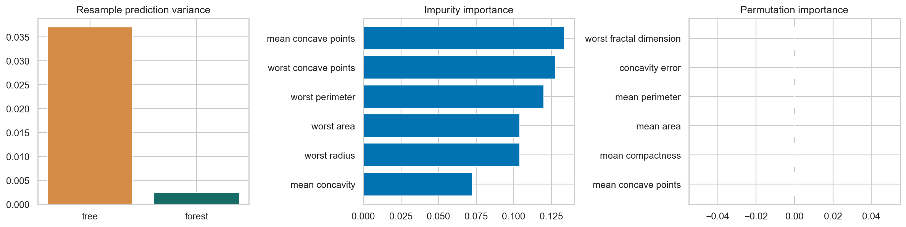

ML Hands-on Lab · 05 — Tree-based
Bagging and random forests
A random forest reduces the instability of individual decision trees by averaging trees that saw different sampled rows and feature choices. The benefit depends on how correlated their errors remain.
Read this page independently, then run the notebook cells in order. The figure below is a preserved historical notebook output; no model training was rerun for this editorial revision.
1. The experiment and its boundary
The notebook uses the 569-row breast-cancer measurement dataset as a classification example, with malignant encoded as 1. A stratified 75/25 split holds out the final comparison rows. Correlated measurements such as radius, perimeter and area make feature importance deliberately difficult to interpret.
The main model contains 180 trees. A second experiment draws 18 bootstrap versions of the training set, fits one tree and a 45-tree forest to each, and records the probability each model assigns to every fixed test row. This measures sensitivity to training resampling, rather than just counting correct classifications.
2. The mechanism
Each tree receives a bootstrap sample: an n-row draw with replacement from n training rows. At each split, the forest offers a random subset of features. These two perturbations keep every tree from following the same split decisions. The final probability is the average of tree probabilities.
p_forest(x) = (p₁(x) + … + p_B(x)) / B
Var(mean) = σ² [ρ + (1 − ρ) / B]
The variance identity assumes equal individual variances and pairwise correlation ρ. Independent errors average down approximately as 1/B; highly correlated errors leave a floor. Out-of-bag (OOB) scoring predicts a training row using only trees whose bootstrap sample omitted it.
3. Work through a tiny example
Five probabilities [.1, .8, .6, .7, .3] average to .5. If all five trees instead always produce the same answer, averaging changes nothing. For ten equally variable trees with ρ=.5, the variance factor is .5 + .5/10 = .55, not .1. More trees cannot remove that correlated part.
An observation is absent from one bootstrap sample with probability (1 − 1/n)ⁿ, approximately 37% for large n. That is why OOB predictions are available without reserving an additional fitting subset.
4. Settings that change this experiment
| Notebook setting | What it changes |
|---|---|
| 180 trees in the main model | More trees stabilize the ensemble estimate and OOB score but cost more compute; they do not repair the wrong target or leakage. |
| max_features="sqrt" | A smaller feature subset can decorrelate trees but may deny a split its strongest variable. |
| min_samples_leaf=2; class_weight="balanced" | Leaf size smooths probabilities. Class weights change the fitting objective; evaluate threshold behavior and probability calibration separately. |
5. The actual notebook operation
These are the actual core operations from the matching notebook, reformatted for readability. They use the data, imports and variables defined in earlier cells; open the notebook to execute the complete experiment.
Notebook cell 10 · counting all cells from 1
(X_train, X_test, y_train, y_test) = train_test_split(X, y, test_size=0.25, stratify=y, random_state=SEED)
forest = RandomForestClassifier(n_estimators=180, max_features='sqrt', min_samples_leaf=2, oob_score=True, n_jobs=1, random_state=SEED, class_weight='balanced')
print('Train/test:', X_train.shape, X_test.shape)Notebook cell 12 · counting all cells from 1
forest.fit(X_train, y_train)
prob = forest.predict_proba(X_test)[:, 1]
print(f'OOB={forest.oob_score_:.3f}; test balanced={balanced_accuracy_score(y_test, prob >= 0.5):.3f}; AUC={roc_auc_score(y_test, prob):.3f}')6. Baseline and what the metrics mean
The notebook reports balanced accuracy, the mean recall of the two classes, with .5 as a non-informative/constant-class reference. It also reports ROC AUC, where .5 is a chance-ranking reference. The default forest OOB score is ordinary accuracy, so do not compare it numerically as if it were balanced accuracy.
In the resampling experiment, the single tree is the structural baseline. For each fixed test row, the notebook computes variance across the 18 predicted probabilities, then averages that variance over rows. This is a stability measure, not test error.
7. Read the historical figure

- Left: the historical forest predictions vary much less across the resampled fits. That supports a variance-reduction explanation on these rows.
- Middle: impurity importance sums each feature’s contribution to split improvements within the fitted trees. Correlated size measurements can divide that credit.
- Right: historical single-feature permutation importances are near zero. The notebook uses the estimator’s default accuracy score, only five permutations, and correlated substitutes; zero here is not proof that these measurements carry no information.
8. Break the assumption
The final cell compares separately seeded decision trees trained on the same full training set with randomized one-tree forests. The former remove bootstrap diversity and may agree closely; they are not guaranteed to be identical because random feature ordering and tied split choices can still differ.
Use the printed variation to inspect diversity. Greater variation between individual trees is not itself a win: the ensemble must still average useful predictions. To test the correlation argument directly, compare prediction-error correlations and the final averaged score, keeping data and leaf constraints fixed.
9. Exercises with a decision to explain
- Increase tree count from 5 toward 300 and plot OOB accuracy and runtime. Identify stabilization rather than choosing the biggest model automatically.
- Duplicate a strong size feature. Compare how impurity credit and single-feature permutation importance redistribute, then permute the correlated group together.
- Repeat the 18-resample comparison with matched leaf sizes and with max_features=None. Separate the effect of tree smoothness from the effect of feature randomization.
10. Run and inspect
Change one assumption at a time, keep the appropriate evaluation boundary, and compare the actual results. A baseline win or an inconclusive result is useful evidence.